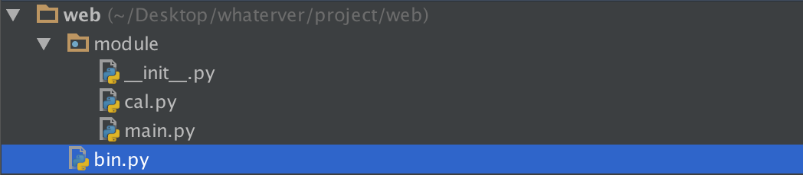
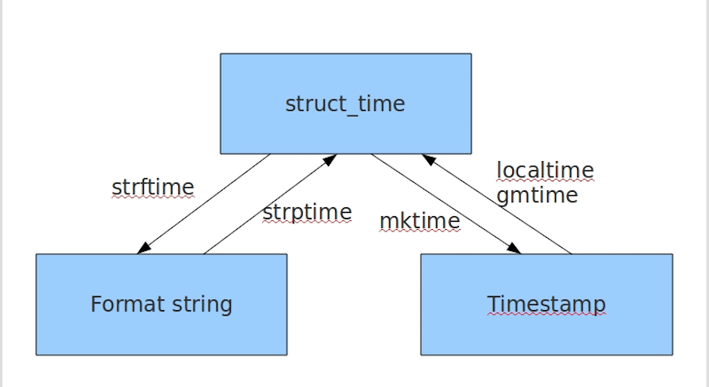

7. python之内置模块
python常用内置模块¶
模块的概念:¶
在Python中，一个.py文件就称之为一个模块（Module）。
模块分3种
1 python标准库
2 第三方模块
3 自定义模块
- 模块的导入
import 语句
import module1,module2
[ 'G:\\py3\\py3\\py3\\venv\\Scripts\\python36.zip', 'C:\\Python36\\DLLs', 'C:\\Python36\\lib', 'C:\\Python36', 'G:\\py3\\py3\\py3\\venv', 'G:\\py3\\py3\\py3\\venv\\lib\\site-packages', 'G:\\py3\\py3\\py3\\venv\\lib\\site-packages\\setuptools-39.1.0-py3.6.egg', 'G:\\py3\\py3\\py3\\venv\\lib\\site-packages\\pip-10.0.1-py3.6.egg', 'C:\\Program Files\\JetBrains\\PyCharm 2018.2.3\\helpers\\pycharm_matplotlib_backend']
from .... import 语句
from module import name1,name2
这个声明不会把整个modulename模块导入到当前的命名空间中，只会将它里面的name1或name2单个引入到执行这个声明的模块的全局符号表。
from ... import *
import运行本质¶
import test from test import add
无论1还是2，首先通过sys.path找到test.py,然后执行test脚本（全部执行），区别是1会将test这个变量名加载到名字空间，而2只会将add这个变量名加载进来。
包¶
如果不同的人编写的模块名相同怎么办？为了避免模块名冲突，Python又引入了按目录来组织模块的方法，称为包（Package）。 请注意，每一个包目录下面都会有一个__init__.py的文件，这个文件是必须存在的，否则，Python就把这个目录当成普通目录(文件夹)，而不是一个包。init.py可以是空文件，也可以有Python代码，因为__init__.py本身就是一个模块，而它的模块名就是对应包的名字。
调用包就是执行包下的__init__.py文件
两个实例需要注意¶

##-------------cal.py
def add(x,y):
return x+y
##-------------main.py
import cal #from module import cal
def main():
cal.add(1,2)
##--------------bin.py
from module import main
main.main()
当执行bin.py的时候,系统会将bin.py脚本路径(文件夹)加入到环境变量 # from module import cal 改成 from . import cal同样可以，这是因为bin.py是我们的执行脚本， # sys.path里有bin.py的当前环境。即/Users/yuanhao/Desktop/whaterver/project/web这层路径， # 无论import what , 解释器都会按这个路径找。所以当执行到main.py时，import cal会找不到，因为 # sys.path里没有/Users/yuanhao/Desktop/whaterver/project/web/module这个路径，而 # from module/. import cal 时，解释器就可以找到了。
内置模块re¶
- 简介
正则表达式本身是一种小型的、高度专业化的编程语言，而在python中，通过内嵌集成re模块，程序媛们可以直接调用来实现正则匹配。正则表达式模式被编译成一系列的字节码，然后由用C编写的匹配引擎执行。
常用的一些正则
. 匹配任意除换行符"\n"外的字符(在DOTALL模式中也能匹配换行符
\ 转义字符，使后一个字符改变原来的意思
* 匹配前一个字符0或多次
+ 匹配前一个字符1次或无限次
? 匹配一个字符0次或1次
^ 匹配字符串开头。在多行模式中匹配每一行的开头
$ 匹配字符串末尾，在多行模式中匹配每一行的末尾
| 或。匹配|左右表达式任意一个，从左到右匹配，如果|没有包括在()中，则它的范围是整个正则表达式
{} {m}匹配前一个字符m次，{m,n}匹配前一个字符m至n次，若省略n，则匹配m至无限次
[] 字符集。对应的位置可以是字符集中任意字符。字符集中的字符可以逐个列出，也可以给出范围，如[abc]或[a-c]。[^abc]表示取反，即非abc。
所有特殊字符在字符集中都失去其原有的特殊含义。用\反斜杠转义恢复特殊字符的特殊含义。
() 被括起来的表达式将作为分组，从表达式左边开始没遇到一个分组的左括号“（”，编号+1.
分组表达式作为一个整体，可以后接数量词。表达式中的|仅在该组中有效。
- 反斜杠后边跟元字符去除特殊功能；（即将特殊字符转义成普通字符）
- 反斜杠后边跟普通字符实现特殊功能；（即预定义字符）
- 引用序号对应的字组所匹配的字符串。
- 常用一些匹配
a=re.search(r'(tina)(fei)haha\2','tinafeihahafei tinafeihahatina').group() print(a) 结果： tinafeihahafei \2代表第二个分组(fei)
\d 数字:[0-9] \D 非数字:[^\d] \s 匹配任何空白字符 \S 非空白字符:[^\s] \w 匹配包括下划线在内的任何字字符:[A-Za-z0-9_] \W 匹配非字母字符，即匹配特殊字符 \A 仅匹配字符串开头,同^ \Z 仅匹配字符串结尾，同$ \b 匹配\w和\W之间，即匹配单词边界匹配一个单词边界，也就是指单词和空格间的位置。例如， 'er\b' 可以匹配"never" 中的 'er'，但不能匹配 "verb" 中的 'er'。(注意识别什么情况下是一个单词) \B [^\b]
这里需要强调一下\b的单词边界的理解：
w = re.findall('\btina','tian tinaaaa')
print(w)
s = re.findall(r'\btina','tian tinaaaa')
print(s)
v = re.findall(r'\btina','tian#tinaaaa')
print(v)
a = re.findall(r'\btina\b','tian#tina@aaa')
print(a)
k = re.findall(r'\btina','tiankktinaaaa')
print(k)
执行结果如下：
[]
['tina']
['tina']
['tina']
[]
一个单词的界限就是单词前后(紧邻单词)不在有字母
分组就是用一对圆括号“()”括起来的正则表达式，匹配出的内容就表示一个分组。从正则表达式的左边开始看，看到的第一个左括号“(”表示第一个分组，第二个表示第二个分组，依次类推，需要注意的是，有一个隐含的全局分组（就是0），就是整个正则表达式。 分完组以后，要想获得某个分组的内容，直接使用group(num)和groups()函数去直接提取就行。
三种分组
(?P<name>正则表达式)#name是一个合法的标识符
>>> s = "ip='230.192.168.78',version='1.0.0'"
>>> re.search(r"ip='(?P<ip>\d+\.\d+\.\d+\.\d+).*", s)
>>> res.group('ip')#通过命名分组引用分组
'230.192.168.78'
当用”()”定义了一个正则表达式组后,正则引擎则会把被匹配的组按照顺序编号,存入缓存。这样我们想在后面对已经匹配过的内容进行引用时，就可以用”\数字”的方式或者是通过命名分组进行”(?P=name)“进行引用。\1表示引用第一个分组,\2引用第二个分组,以此类推,\n引用第n个组。而\0则引用整个被匹配的正则表达式本身。这些引用都必须是在正则表达式中才有效，用于匹配一些重复的字符串。
#通过命名分组进行后向引用
>>> re.search(r'(?P<name>go)\s+(?P=name)\s+(?P=name)', 'go go go').group('name')
'go'
#通过默认分组编号进行后向引用
>>> re.search(r'(go)\s+\1\s+\1', 'go go go').group()
'go go go'
re模块常用的函数¶
compile()
编译正则表达式模式，返回一个对象的模式。（可以把那些常用的正则表达式编译成正则表达式对象，这样可以提高一点效率。）
格式：
re.compile(pattern,flags=0)
pattern: 编译时用的表达式字符串。
flags 编译标志位，用于修改正则表达式的匹配方式，如：是否区分大小写，多行匹配等。常用的flags有：
标志含义 re.S(DOTALL) 使.匹配包括换行在内的所有字符 re.I（IGNORECASE） 使匹配对大小写不敏感 re.L（LOCALE） 做本地化识别（locale-aware)匹配，法语等 re.M(MULTILINE) 多行匹配，影响^和$ re.X(VERBOSE) 该标志通过给予更灵活的格式以便将正则表达式写得更易于理解 re.U 根据Unicode字符集解析字符，这个标志影响\w,\W,\b,\B
import re tt = "Tina is a good girl, she is cool, clever, and so on..." rr = re.compile(r'\w*oo\w*') print(rr.findall(tt)) #查找所有包含'oo'的单词 执行结果如下： ['good', 'cool']
print(re.match('com','comwww.runcomoob').group())
print(re.match('com','Comwww.runcomoob',re.I).group())
执行结果如下：
com
com
search
re.search(pattern, string, flags=0)
re.search函数会在字符串内查找模式匹配,只要找到第一个匹配然后返回，如果字符串没有匹配，则返回None。
print(re.search('\dcom','www.4comrunoob.5com').group())
执行结果如下：
4com
print(re.search('\dcom','www.deeeeeeee')
执行结果如下：
None
group() 返回被 RE 匹配的字符串
start() 返回匹配开始的位置 end() 返回匹配结束的位置
span() 返回一个元组包含匹配 (开始,结束) 的位置
group() 返回re整体匹配的字符串，可以一次输入多个组号，对应组号匹配的字符串。
a. group（）返回re整体匹配的字符串，
b. group (n,m) 返回组号为n，m所匹配的字符串，如果组号不存在，则返回indexError异常
c.groups（）
groups() 方法返回一个包含正则表达式中所有小组字符串的元组，从 1 到所含的小组号，通常groups()不需要参数，返回一个元组，元组中的元就是正则表达式中定义的组。
import re
a = "123abc456"
print(re.search("([0-9]*)([a-z]*)([0-9]*)",a).group(0)) #123abc456,返回整体
print(re.search("([0-9]*)([a-z]*)([0-9]*)",a).group(1)) #123
print(re.search("([0-9]*)([a-z]*)([0-9]*)",a).group(2)) #abc
print(re.search("([0-9]*)([a-z]*)([0-9]*)",a).group(3)) #456
print (re.search("([0-9]*)([a-z]*)([0-9]*)",a).groups()) #返回匹配的元祖('123','abc','456')
###group(1) 列出第一个括号匹配部分，group(2) 列出第二个括号匹配部分，group(3) 列出第三个括号匹配部分。###
re.findall遍历匹配，可以获取字符串中所有匹配的字符串，返回一个列表。
格式：
re.findall(pattern, string, flags=0)
p = re.compile(r'\d+')
print(p.findall('o1n2m3k4'))
执行结果如下：
['1', '2', '3', '4']
搜索string，返回一个顺序访问每一个匹配结果（Match对象）的迭代器。找到 RE 匹配的所有子串，并把它们作为一个迭代器返回。
格式：
re.finditer(pattern, string, flags=0)
iter = re.finditer(r'\d+','12 drumm44ers drumming, 11 ... 10 ...')
for i in iter:
print(i)
print(i.group())
print(i.span())
执行结果如下：
<_sre.SRE_Match object; span=(0, 2), match='12'>
12
(0, 2)
<_sre.SRE_Match object; span=(8, 10), match='44'>
44
(8, 10)
<_sre.SRE_Match object; span=(24, 26), match='11'>
11
(24, 26)
<_sre.SRE_Match object; span=(31, 33), match='10'>
10
(31, 33)
按照能够匹配的子串将string分割后返回列表。
可以使用re.split来分割字符串，如：re.split(r'\s+', text)；将字符串按空格分割成一个单词列表。
格式：
re.split(pattern, string[, maxsplit])
print(re.split('\d+','one1two2three3four4five5'))
执行结果如下：
['one', 'two', 'three', 'four', 'five', '']
使用re替换string中每一个匹配的子串后返回替换后的字符串。
格式：
re.sub(pattern, repl, string, count)
text = "JGood is a handsome boy, he is cool, clever, and so on..." print(re.sub(r'\s+', '-', text)) 执行结果如下： JGood-is-a-handsome-boy,-he-is-cool,-clever,-and-so-on... 其中第二个函数是替换后的字符串；本例中为'-' 第四个参数指替换个数。默认为0，表示每个匹配项都替换。
内置模块2-----> os¶
os.getcwd()：查看当前所在路径。
os.listdir(path):列举目录下的所有文件。返回的是列表类型。
os.listdir('G:\py3\py3'))
os.path.abspath(path):返回path的绝对路径。
(os.path.abspath('.'))
os.path.split(path):将路径分解为(文件夹,文件名)，返回的是元组类型 os.path.split(path):将路径分解为(文件夹,文件名)，返回的是元组类型。可以看出，若路径字符串最后一个字符是\,则只有文件夹部分有值；若路径字符串中均无\,则只有文件名部分有值。若路径字符串有\，且不在最后，则文件夹和文件名均有值。且返回的文件夹的结果不包含.
os.path.split('G:\py3\py3\py3\复习\test1.py')
os.path.join(path1,path2,...):将path进行组合，若其中有绝对路径，则之前的path将被删除。
print (os.path.join('G:\py3\py3\py3','test1.py'))
=====>:G:\py3\py3\py3\test1.py
os.path.dirname('G:\py3\py3\py3')
print (os.path.dirname('/opt/unilog/gggg/')) #注意有/结尾的情况
print (os.path.dirname('/opt/unilog/gggg/1.txt'))
输出===》G:\py3\py3
/opt/unilog
/opt/unilog/gggg
print (os.path.basename('/opt/unilog/gggg/1.txt'))
====> 1.txt
os.path.getsize(path):文件或文件夹的大小，若是文件夹返回0。
print (os.path.getsize(os.path.join(os.getcwd(),'test1.py')))
os.chdir()改变当前工作目录
os.chdir('/home/sy')
result = os.getcwd()
print(result)
os.mkdir('girls')
#os.rmdir('girls')
os.rename('/home/sy/a','/home/sy/alibaba')
os.rename('02.txt','002.txt')
result = os.stat('/home/sy/PycharmProject/Python3/10.27/01.py)
print(result)
result = os.system('ls -al') #获取隐藏文件
print(result)
result = os.getenv('PATH')
os.putenv('PATH','/home/sy/下载')
print(os.name) #posix -> linux或者unix系统 nt -> window系统
os.walk(top，topdown = True，onerror = None，followlinks = False ) 通过从上到下或从下到上遍历树来生成目录树中的文件名。对于以目录顶部（包括顶部本身）为根的树中的每个目录 ，它产生一个3元组。 (dirpath, dirnames, filenames)——>dirpath是一个字符串，即目录的路径。 dirnames中是子目录的名称列表中的dirpath（不包括'.'和'..'）。 filenames是dirpath中非目录文件的名称列表。请注意，列表中的名称不包含路径组件。要获取完整路径（以top开头）到dirpath中的文件或目录。
for dirName,subDir,files in os.walk('G:\py3\py3\py3\day33'):
print (dirName)
print (subDir)
print (files)
常用内置模块之---->datetime¶
获取现在时间
from datetime import datetime print (datetime.now()) -->:2019-04-14 21:18:28.604079
dt = datetime(2019,4,8,23,10) print (dt) ---->:2019-04-08 23:10:00
dt = datetime(2019,4,8,23,10) print (dt.timestamp()) --->:1554736200.0
ct=1527800000 print (datetime.fromtimestamp(ct)) --->:2018-06-01 04:53:20
模块之---->time¶
1 返回当前时间戳
time.time()
time.localtime(time.time()) --->:time.struct_time(tm_year=2019, tm_mon=4, tm_mday=16, tm_hour=21, tm_min=35, tm_sec=43, tm_wday=1, tm_yday=106, tm_isdst=0)
time.gmtime(time.time())
time.mktime(time.localtime())
time.asctime() -->:Tue Apr 16 21:45:10 2019
time.ctime() -->:Tue Apr 16 21:45:10 2019
time.strftime("%Y-%m-%d %X", time.localtime())
-->:2019-04-16 21:56:53
传入时间元祖
print (time.strftime("%Y-%m-%d %X",(2009, 2, 17, 10, 48, 39,23,1,2,)))
-->:2009-02-17 10:48:39
print(time.strptime('2011-05-05 16:37:06', '%Y-%m-%d %X'))
--->:time.struct_time(tm_year=2011, tm_mon=5, tm_mday=5, tm_hour=16, tm_min=37, tm_sec=6, tm_wday=3, tm_yday=125, tm_isdst=-1)
常见format格式¶
格式 含义 %a 本地（locale）简化星期名称 %A 本地完整星期名称 %b 本地简化月份名称 %B 本地完整月份名称 %c 本地相应的日期和时间表示 %d 一个月中的第几天（01 - 31） %H 一天中的第几个小时（24小时制，00 - 23） %I 第几个小时（12小时制，01 - 12） %j 一年中的第几天（001 - 366） %m 月份（01 - 12） %M 分钟数（00 - 59） %p 本地am或者pm的相应符 %S 秒（01 - 61） %U 一年中的星期数。（00 - 53星期天是一个星期的开始。）第一个星期天之前的所有天数都放在第0周。 %w 一个星期中的第几天（0 - 6，0是星期天） %W 和%U基本相同，不同的是%W以星期一为一个星期的开始。 %x 本地相应日期 %X 本地相应时间 %y 去掉世纪的年份（00 - 99） %Y 完整的年份 %Z 时区的名字（如果不存在为空字符） %% ‘%’字符
常用的转化 
文件处理模块→configparser模块¶
生成某种格式的文档
import configparser
config = configparser.ConfigParser()
config["DEFAULT"] = {'ServerAliveInterval': '45',
'Compression': 'yes',
'CompressionLevel': '9'}
config['bitbucket.org'] = {}
config['bitbucket.org']['User'] = 'hg'
config['topsecret.server.com'] = {}
topsecret = config['topsecret.server.com']
topsecret['Host Port'] = '50022' # mutates the parser
topsecret['ForwardX11'] = 'no' # same here
config['DEFAULT']['ForwardX11'] = 'yes'<br>
with open('example.ini', 'w') as configfile:
config.write(configfile)
[DEFAULT] ServerAliveInterval = 45 Compression = yes CompressionLevel = 9 ForwardX11 = yes [bitbucket.org] User = hg [topsecret.server.com] Port = 50022 ForwardX11 = no
对文档的一些操作
import configparser
config = configparser.ConfigParser()
#---------------------------------------------查
print(config.sections()) #[]
config.read('example.ini')
print(config.sections()) #['bitbucket.org', 'topsecret.server.com']
#拿到[]里面的值,但是第一个DEFAULT是拿不到的,换成其他的可以拿到
print('bytebong.com' in config)# False
print(config['bitbucket.org']['User']) # hg
print(config['DEFAULT']['Compression']) #yes
print(config['topsecret.server.com']['ForwardX11']) #no
for key in config['bitbucket.org']:
print(key)
# user
# serveraliveinterval
# compression
# compressionlevel
# forwardx11
print(config.options('bitbucket.org'))#['user', 'serveraliveinterval', 'compression', 'compressionlevel', 'forwardx11']
print(config.items('bitbucket.org')) #[('serveraliveinterval', '45'), ('compression', 'yes'), ('compressionlevel', '9'), ('forwardx11', 'yes'), ('user', 'hg')]
print(config.get('bitbucket.org','compression'))#yes
#--------------删,改,增(config.write(open('i.cfg', "w")))
config.add_section('yuan')#增加sections
config.remove_section('topsecret.server.com')
config.remove_option('bitbucket.org','user')
config.set('bitbucket.org','k1','11111')
config.write(open('i.cfg', "w"))
日志模块之-------logging¶
- 简单应用
import logging
logging.debug('debug message')
logging.info('info message')
logging.warning('warning message')
logging.error('error message')
logging.critical('critical message')
WARNING:root:warning message ERROR:root:error message CRITICAL:root:critical message
- 二 灵活配置日志级别，日志格式，输出位置¶
import logging
logging.basicConfig(level=logging.DEBUG,
format='%(asctime)s %(filename)s[line:%(lineno)d] %(levelname)s %(message)s',
datefmt='%a, %d %b %Y %H:%M:%S',
filename='/tmp/test.log',
filemode='w')
logging.debug('debug message')
logging.info('info message')
logging.warning('warning message')
logging.error('error message')
logging.critical('critical message')
查看输出：
cat /tmp/test.log Mon, 05 May 2014 16:29:53 test_logging.py[line:9] DEBUG debug message Mon, 05 May 2014 16:29:53 test_logging.py[line:10] INFO info message Mon, 05 May 2014 16:29:53 test_logging.py[line:11] WARNING warning message Mon, 05 May 2014 16:29:53 test_logging.py[line:12] ERROR error message Mon, 05 May 2014 16:29:53 test_logging.py[line:13] CRITICAL critical message
可见在logging.basicConfig()函数中可通过具体参数来更改logging模块默认行为，可用参数有
filename：用指定的文件名创建FiledHandler（后边会具体讲解handler的概念），这样日志会被存储在指定的文件中。
filemode：文件打开方式，在指定了filename时使用这个参数，默认值为“a”还可指定为“w”。
format：指定handler使用的日志显示格式。
datefmt：指定日期时间格式。
level：设置rootlogger（后边会讲解具体概念）的日志级别
stream：用指定的stream创建StreamHandler。可以指定输出到sys.stderr,sys.stdout或者文件(f=open('test.log','w'))，默认为sys.stderr。若同时列出了filename和stream两个参数，则stream参数会被忽略。
format参数中可能用到的格式化串：
%(name)s Logger的名字 %(levelno)s 数字形式的日志级别 %(levelname)s 文本形式的日志级别 %(pathname)s 调用日志输出函数的模块的完整路径名，可能没有 %(filename)s 调用日志输出函数的模块的文件名 %(module)s 调用日志输出函数的模块名 %(funcName)s 调用日志输出函数的函数名 %(lineno)d 调用日志输出函数的语句所在的代码行 %(created)f 当前时间，用UNIX标准的表示时间的浮 点数表示 %(relativeCreated)d 输出日志信息时的，自Logger创建以 来的毫秒数 %(asctime)s 字符串形式的当前时间。默认格式是 “2003-07-08 16:49:45,896”。逗号后面的是毫秒 %(thread)d 线程ID。可能没有 %(threadName)s 线程名。可能没有 %(process)d 进程ID。可能没有 %(message)s用户输出的消息
三 logger对象¶
上述几个例子中我们了解到了logging.debug()、logging.info()、logging.warning()、logging.error()、logging.critical()（分别用以记录不同级别的日志信息），logging.basicConfig()（用默认日志格式（Formatter）为日志系统建立一个默认的流处理器（StreamHandler），设置基础配置（如日志级别等）并加到root logger（根Logger）中）这几个logging模块级别的函数，另外还有一个模块级别的函数是logging.getLogger([name])（返回一个logger对象，如果没有指定名字将返回root logger）
先看一个最简单的过程：
import logging
logger = logging.getLogger()
# 创建一个handler，用于写入日志文件
fh = logging.FileHandler('test.log')
# 再创建一个handler，用于输出到控制台
ch = logging.StreamHandler()
formatter = logging.Formatter('%(asctime)s - %(name)s - %(levelname)s - %(message)s')
fh.setFormatter(formatter)
ch.setFormatter(formatter)
logger.addHandler(fh) #logger对象可以添加多个fh和ch对象
logger.addHandler(ch)
logger.debug('logger debug message')
logger.info('logger info message')
logger.warning('logger warning message')
logger.error('logger error message')
logger.critical('logger critical message')
(1) Logger是一个树形层级结构，输出信息之前都要获得一个Logger（如果没有显示的获取则自动创建并使用root Logger，如第一个例子所示）。 logger = logging.getLogger()返回一个默认的Logger也即root Logger，并应用默认的日志级别、Handler和Formatter设置。
当然也可以通过Logger.setLevel(lel)指定最低的日志级别，可用的日志级别有logging.DEBUG、logging.INFO、logging.WARNING、logging.ERROR、logging.CRITICAL。
Logger.debug()、Logger.info()、Logger.warning()、Logger.error()、Logger.critical()输出不同级别的日志，只有日志等级大于或等于设置的日志级别的日志才会被输出。
logger.debug('logger debug message')
logger.info('logger info message')
logger.warning('logger warning message')
logger.error('logger error message')
logger.critical('logger critical message')
(2) 如果我们再创建两个logger对象：
##################################################
logger1 = logging.getLogger('mylogger')
logger1.setLevel(logging.DEBUG)
logger2 = logging.getLogger('mylogger')
logger2.setLevel(logging.INFO)
logger1.addHandler(fh)
logger1.addHandler(ch)
logger2.addHandler(fh)
logger2.addHandler(ch)
logger1.debug('logger1 debug message')
logger1.info('logger1 info message')
logger1.warning('logger1 warning message')
logger1.error('logger1 error message')
logger1.critical('logger1 critical message')
logger2.debug('logger2 debug message')
logger2.info('logger2 info message')
logger2.warning('logger2 warning message')
logger2.error('logger2 error message')
logger2.critical('logger2 critical message')
<1>我们明明通过logger1.setLevel(logging.DEBUG)将logger1的日志级别设置为了DEBUG，为何显示的时候没有显示出DEBUG级别的日志信息，而是从INFO级别的日志开始显示呢？
原来logger1和logger2对应的是同一个Logger实例，只要logging.getLogger（name）中名称参数name相同则返回的Logger实例就是同一个，且仅有一个，也即name与Logger实例一一对应。在logger2实例中通过logger2.setLevel(logging.INFO)设置mylogger的日志级别为logging.INFO，所以最后logger1的输出遵从了后来设置的日志级别。
<2>为什么logger1、logger2对应的每个输出分别显示两次?
这是因为我们通过logger = logging.getLogger()显示的创建了root Logger，而logger1 = logging.getLogger('mylogger')创建了root Logger的孩子(root.)mylogger,logger2同样。而孩子,孙子，重孙……既会将消息分发给他的handler进行处理也会传递给所有的祖先Logger处理。
ok,那么现在我们把
# logger.addHandler(fh) # logger.addHandler(ch) 注释掉，我们再来看效果：

因为我们注释了logger对象显示的位置，所以才用了默认方式，即标准输出方式。因为它的父级没有设置文件显示方式，所以在这里只打印了一次。
孩子,孙子，重孙……可逐层继承来自祖先的日志级别、Handler、Filter设置，也可以通过Logger.setLevel(lel)、Logger.addHandler(hdlr)、Logger.removeHandler(hdlr)、Logger.addFilter(filt)、Logger.removeFilter(filt)。设置自己特别的日志级别、Handler、Filter。若不设置则使用继承来的值。
subprocess模块¶
简介¶
当我们需要调用系统的命令的时候，最先考虑的os模块。用os.system()和os.popen()来进行操作。但是这两个命令过于简单，不能完成一些复杂的操作，如给运行的命令提供输入或者读取命令的输出，判断该命令的运行状态，管理多个命令的并行等等。这时subprocess中的Popen命令就能有效的完成我们需要的操作。 subprocess模块允许一个进程创建一个新的子进程，通过管道连接到子进程的stdin/stdout/stderr，获取子进程的返回值等操作。
参数如下
subprocess.Popen(args, bufsize=0, executable=None, stdin=None, stdout=None,stderr=None, preexec_fn=None, close_fds=False, shell=False,<br> cwd=None, env=None, universal_newlines=False, startupinfo=None, creationflags=0)
参数说明：
# 参数args可以是字符串或者序列类型（如：list，元组），用于指定进程的可执行文件及其参数。 # 如果是序列类型，第一个元素通常是可执行文件的路径。我们也可以显式的使用executeable参 # 数来指定可执行文件的路径。在windows操作系统上，Popen通过调用CreateProcess()来创 # 建子进程,CreateProcess接收一个字符串参数，如果args是序列类型，系统将会通过 # list2cmdline()函数将序列类型转换为字符串。 # # # 参数bufsize：指定缓冲。我到现在还不清楚这个参数的具体含义，望各个大牛指点。 # # 参数executable用于指定可执行程序。一般情况下我们通过args参数来设置所要运行的程序。如 # 果将参数shell设为True，executable将指定程序使用的shell。在windows平台下，默认的 # shell由COMSPEC环境变量来指定。 # # 参数stdin, stdout, stderr分别表示程序的标准输入、输出、错误句柄。他们可以是PIPE， # 文件描述符或文件对象，也可以设置为None，表示从父进程继承。 # # 参数preexec_fn只在Unix平台下有效，用于指定一个可执行对象（callable object），它将 # 在子进程运行之前被调用。 # # 参数Close_sfs：在windows平台下，如果close_fds被设置为True，则新创建的子进程将不会 # 继承父进程的输入、输出、错误管道。我们不能将close_fds设置为True同时重定向子进程的标准 # 输入、输出与错误(stdin, stdout, stderr)。 # # 如果参数shell设为true，程序将通过shell来执行。 # # 参数cwd用于设置子进程的当前目录。 # # 参数env是字典类型，用于指定子进程的环境变量。如果env = None，子进程的环境变量将从父 # 进程中继承。 # # 参数Universal_newlines:不同操作系统下，文本的换行符是不一样的。如：windows下 # 用’/r/n’表示换，而Linux下用’/n’。如果将此参数设置为True，Python统一把这些换行符当 # 作’/n’来处理。 # # 参数startupinfo与createionflags只在windows下用效，它们将被传递给底层的 # CreateProcess()函数，用于设置子进程的一些属性，如：主窗口的外观，进程的优先级等等。
import subprocess
a=subprocess.Popen('ls')# 创建一个新的进程,与主进程不同步
print('>>>>>>>',a)#a是Popen的一个实例对象
'''
>>>>>>> <subprocess.Popen object at 0x10185f860>
__init__.py
__pycache__
log.py
main.py
'''
# subprocess.Popen('ls -l',shell=True)
# subprocess.Popen(['ls','-l'])
subprocess.PIPE¶
在创建Popen对象时，subprocess.PIPE可以初始化stdin, stdout或stderr参数。表示与子进程通信的标准流。
import subprocess
# subprocess.Popen('ls')
p=subprocess.Popen('ls',stdout=subprocess.PIPE)#结果跑哪去啦?
print(p.stdout.read())#这这呢:b'__pycache__\nhello.py\nok.py\nweb\n'
创建Popen对象时，用于初始化stderr参数，表示将错误通过标准输出流输出。
一般常见写法
p=subprocess.Popen('ls',stdout=subprocess.PIPE,stderr=subprocess.PIPE,stdin=subprocess.PIPE,shell=True)
取出结果
p.stdout.read()
p.stderr.read()
其他的一些用法
Popen.poll() 用于检查子进程是否已经结束。设置并返回returncode属性。 Popen.wait() 等待子进程结束。设置并返回returncode属性。 Popen.communicate(input=None) 与子进程进行交互。向stdin发送数据，或从stdout和stderr中读取数据。可选参数input指定发送到子进程的参数。 Communicate()返回一个元组：(stdoutdata, stderrdata)。注意：如果希望通过进程的stdin向其发送数据，在创建Popen对象的时候，参数stdin必须被设置为PIPE。同样，如 果希望从stdout和stderr获取数据，必须将stdout和stderr设置为PIPE。 Popen.send_signal(signal) 向子进程发送信号。 Popen.terminate() 停止(stop)子进程。在windows平台下，该方法将调用Windows API TerminateProcess（）来结束子进程。 Popen.kill() 杀死子进程。 Popen.stdin 如果在创建Popen对象是，参数stdin被设置为PIPE，Popen.stdin将返回一个文件对象用于策子进程发送指令。否则返回None。 Popen.stdout 如果在创建Popen对象是，参数stdout被设置为PIPE，Popen.stdout将返回一个文件对象用于策子进程发送指令。否则返回 None。 Popen.stderr 如果在创建Popen对象是，参数stdout被设置为PIPE，Popen.stdout将返回一个文件对象用于策子进程发送指令。否则返回 None。 Popen.pid 获取子进程的进程ID。 Popen.returncode 获取进程的返回值。如果进程还没有结束，返回None。
subprocess模块的工具函数¶
subprocess模块提供了一些函数，方便我们用于创建进程来实现一些简单的功能。 subprocess.call(*popenargs, **kwargs) 运行命令。该函数将一直等待到子进程运行结束，并返回进程的returncode。如果子进程不需要进行交 互,就可以使用该函数来创建。 subprocess.check_call(*popenargs, **kwargs) 与subprocess.call(*popenargs, **kwargs)功能一样，只是如果子进程返回的returncode不为0的话，将触发CalledProcessError异常。在异常对象中，包 括进程的returncode信息。 check_output(*popenargs, **kwargs) 与call()方法类似，以byte string的方式返回子进程的输出，如果子进程的返回值不是0，它抛出CalledProcessError异常，这个异常中的returncode包含返回码，output属性包含已有的输出。 getstatusoutput(cmd)/getoutput(cmd) 这两个函数仅仅在Unix下可用，它们在shell中执行指定的命令cmd，前者返回(status, output)，后者返回output。其中，这里的output包括子进程的stdout和stderr。
实例如下
import subprocess
#1
# subprocess.call('ls',shell=True)
'''
hello.py
ok.py
web
'''
# data=subprocess.call('ls',shell=True)
# print(data)
'''
hello.py
ok.py
web
'''
#2
# subprocess.check_call('ls',shell=True)
'''
hello.py
ok.py
web
'''
# data=subprocess.check_call('ls',shell=True)
# print(data)
'''
hello.py
ok.py
web
'''
# 两个函数区别:只是如果子进程返回的returncode不为0的话，将触发CalledProcessError异常
#3
# subprocess.check_output('ls')#无结果
# data=subprocess.check_output('ls')
# print(data) #b'hello.py\nok.py\nweb\n'
演示
加密模块之--hashlib模块¶
用于加密相关的操作，3.x里代替了md5模块和sha模块，主要提供 SHA1, SHA224, SHA256, SHA384, SHA512 ，MD5 算法
import hashlib
m=hashlib.md5()# m=hashlib.sha256()
m.update('hello'.encode('utf8'))
print(m.hexdigest()) #5d41402abc4b2a76b9719d911017c592
m.update('alvin'.encode('utf8'))
print(m.hexdigest()) #92a7e713c30abbb0319fa07da2a5c4af
m2=hashlib.md5()
m2.update('helloalvin'.encode('utf8'))
print(m2.hexdigest()) #92a7e713c30abbb0319fa07da2a5c4af
以上加密算法虽然依然非常厉害，但有时候存在缺陷，即：通过撞库可以反解。所以，有必要对加密算法中添加自定义key再来做加密。
import hashlib
# ######## 256 ########
hash = hashlib.sha256('898oaFs09f'.encode('utf8'))
hash.update('alvin'.encode('utf8'))
print (hash.hexdigest())#e79e68f070cdedcfe63eaf1a2e92c83b4cfb1b5c6bc452d214c1b7e77cdfd1c7
import hmac
h = hmac.new('alvin'.encode('utf8'))
h.update('hello'.encode('utf8'))
print (h.hexdigest())#320df9832eab4c038b6c1d7ed73a5940
常用模块之json¶
json
如果我们要在不同的编程语言之间传递对象，就必须把对象序列化为标准格式，比如XML，但更好的方法是序列化为JSON，因为JSON表示出来就是一个字符串，可以被所有语言读取，也可以方便地存储到磁盘或者通过网络传输。JSON不仅是标准格式，并且比XML更快，而且可以直接在Web页面中读取，非常方便。
案例
#----------------------------序列化
import json
dic={'name':'alvin','age':23,'sex':'male'}
print(type(dic))#<class 'dict'>
j=json.dumps(dic)
>>> '{"age": 23, "name": "alvin", "sex": "male"}'
print(type(j))#<class 'str'>
反序列化将json字符串转换为字典
a='{"age": 23, "name": "alvin", "sex": "male"}'
print type(a) ---> str
json.loads(a)
->>>:{u'age': 23, u'name': u'alvin', u'sex': u'male'}
json.dump json.load
a = {"name":"Tom", "age":23}
with open("test.json", "w", encoding='utf-8') as f:
# indent 超级好用，格式化保存字典，默认为None，小于0为零个空格
f.write(json.dumps(a, indent=4))
# json.dump(a,f,indent=4) # 和上面的效果一样
---------------------
import json
with open("test.json", "r", encoding='utf-8') as f:
aa = json.loads(f.read())
f.seek(0)
bb = json.load(f) # 与 json.loads(f.read())
print(aa)
print(bb)
import json
#dct="{'1':111}"#json 不认单引号
#dct=str({"1":111})#报错,因为生成的数据还是单引号:{'one': 1}
dct='{"1":"111"}'
print(json.loads(dct))
#conclusion:
# 无论数据是怎样创建的，只要满足json格式，就可以json.loads出来,不一定非要dumps的数据才能loads
pickle模块¶
pickle 模块也提供了四个功能：dumps、dump、loads、load，但是Pickle的问题和所有其他编程语言特有的序列化问题一样，就是它只能用于Python，并且可能不同版本的Python彼此都不兼容，因此，只能用Pickle保存那些不重要的数据，不能成功地反序列化也没关系。
##----------------------------序列化
import pickle
dic={'name':'alvin','age':23,'sex':'male'}
print(type(dic))#<class 'dict'>
j=pickle.dumps(dic)
print(type(j))#<class 'bytes'>
f=open('序列化对象_pickle','wb')#注意是w是写入str,wb是写入bytes,j是'bytes'
f.write(j) #-------------------等价于pickle.dump(dic,f)
f.close()
#-------------------------反序列化
import pickle
f=open('序列化对象_pickle','rb')
data=pickle.loads(f.read())# 等价于data=pickle.load(f)
print(data['age'])
sys模块¶
sys.argv 命令行参数List，第一个元素是程序本身路径 sys.exit(n) 退出程序，正常退出时exit(0) sys.version 获取Python解释程序的版本信息 sys.maxint 最大的Int值 sys.path 返回模块的搜索路径，初始化时使用PYTHONPATH环境变量的值 sys.platform 返回操作系统平台名称